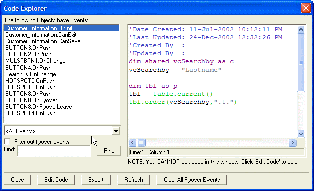
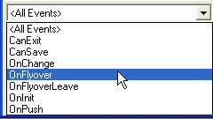

Code Explorer
In Form Design mode, you can use the Code Explorer to do the following tasks:
Quickly find all objects that have defined events, and also find which events are defined for a particular object.
Launch the Code Editor for any selected event.
Turn off Flyover events for all objects.
Export all event code to a text file.
Perform a global search for a string in all event scripts on a form, and identify which event scripts contain this string.
In Form Design mode, select View > Code Explorer.

The Code Explorer shows the code for all events defined for a form. You can filter events using a drop-down list, or specify a search string in the Find field.

You can remove all Flyover events with a single button click .